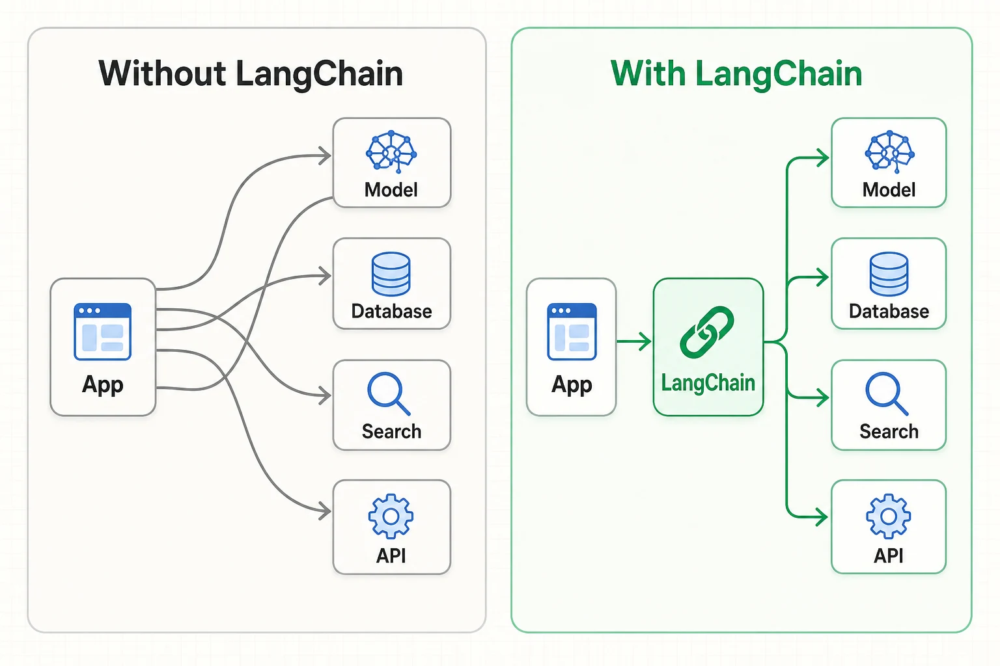
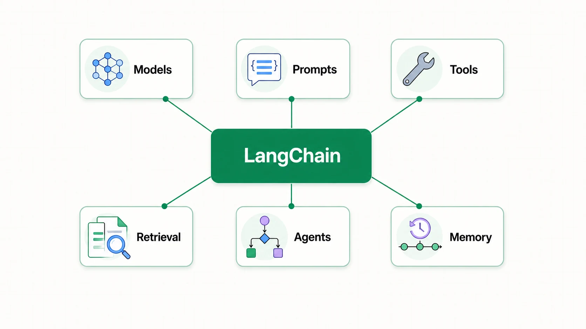
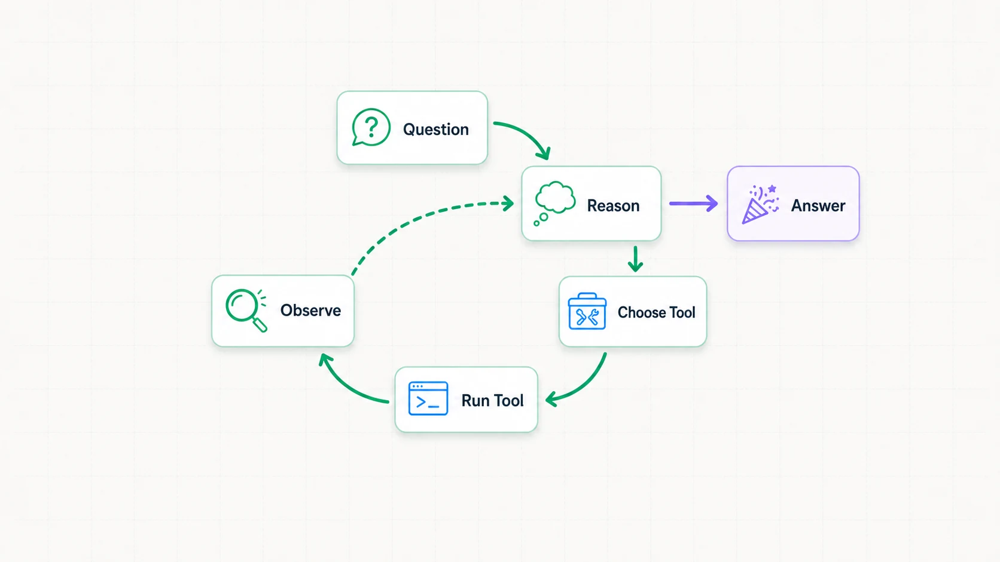

اگه تا حالا با API یک مدل زبانی کار کرده باشی، احتمالاً از یه سؤال ساده شروع کردی: متن رو میفرستی و جواب میگیری. همهچیز خوبه تا وقتی که برنامه باید به دیتابیس وصل بشه، ابزار صدا بزنه، چند مرحله تصمیم بگیره یا یه خروجی قابلاعتماد تحویل بده. LangChain دقیقاً از همینجا وارد بازی میشه.
اول از همه: LangChain چیه؟
LangChain یه فریمورک متنبازه برای ساخت اپلیکیشنها و Agentهایی که با مدلهای زبانی کار میکنن. خودش مدل هوش مصنوعی نیست؛ یه لایهٔ هماهنگکنندهست که مدل رو به ابزارها، دادهها و منطق برنامه وصل میکنه.
یعنی بهجای اینکه اتصال OpenAI یا Claude، اجرای ابزار، تاریخچهٔ گفتگو و فرمت خروجی رو هر بار از صفر مدیریت کنی، یه سری رابط و الگوی آماده داری که این قطعهها رو کنار هم نگه میدارن.
مدل فکر میکنه، ابزار کار انجام میده، داده اطلاعات میده و LangChain جریان بین اینها رو مدیریت میکنه.

چه چیزهایی رو کنار هم میذاره؟
لازم نیست روز اول همهٔ بخشهای LangChain رو یاد بگیری. برای شروع همین شش مفهوم تصویر کلی خوبی بهت میده:

Models
یه رابط تقریباً یکسان برای کار با مدلهای شرکتهای مختلف؛ عوضکردن مدل دردسر کمتری داره.
Prompts
دستورها و پیامهایی که با متغیرهای برنامه ترکیب میشن و به مدل میرسن.
Tools
تابعهایی مثل جستوجو، خواندن دیتابیس، محاسبه یا صدا زدن یک API واقعی.
Retrieval
پیدا کردن بخش مرتبط از اسناد و اضافهکردنش به زمینهٔ مدل؛ پایهٔ خیلی از سیستمهای RAG.
Agents
مدل با توجه به هدف تصمیم میگیره کدوم ابزار رو اجرا کنه و چه زمانی جواب نهایی بده.
Memory
نگهداشتن وضعیت و تاریخچه تا گفتگو یا فرایند چندمرحلهای رشتهاش رو گم نکنه.
اولین Agent رو بسازیم
یه مثال خیلی ساده میسازیم: Agent هواشناسی که هر وقت لازم باشه تابع get_weather رو صدا میزنه. برای نمونه از OpenAI استفاده شده، ولی میتونی provider و مدل رو عوض کنی.
۱. نصب پکیجها
pip install -U langchain langchain-openai۲. ساخت Agent
from langchain.agents import create_agent
def get_weather(city: str) -> str:
"""Get the current weather for a city."""
# در پروژهٔ واقعی اینجا API هواشناسی صدا زده میشه
return f"Weather in {city}: sunny, 24°C"
agent = create_agent(
model="openai:gpt-5-mini",
tools=[get_weather],
system_prompt="جوابها را کوتاه و فارسی بده.",
)
result = agent.invoke({
"messages": [{
"role": "user",
"content": "هوای تورنتو چطوره؟"
}]
})
print(result["messages"][-1].content)کلید API را داخل کد ننویس. آن را با متغیر محیطی OPENAI_API_KEY تنظیم کن.
اینجا نکتهٔ جالب اینه که ما نگفتیم تابع هواشناسی حتماً اجرا بشه. مدل توضیح تابع و سؤال کاربر رو میبینه، خودش تصمیم میگیره ابزار لازمه، نتیجهاش رو میگیره و بعد جواب نهایی رو میسازه.
پشت صحنه چه اتفاقی میافته؟

Agent پیام کاربر، دستور سیستمی و وضعیت فعلی رو کنار هم میذاره.
بررسی میکنه که جواب آمادهست یا برای ادامه به یکی از ابزارها نیاز داره.
LangChain ورودی تابع رو آماده میکنه، ابزار رو صدا میزنه و نتیجه رو به جریان برمیگردونه.
مدل نتیجه رو میبینه؛ یا ابزار دیگهای انتخاب میکنه یا جواب نهایی رو تحویل میده.
این حلقه تا وقتی ادامه داره که مدل جواب نهایی بده یا محدودیت اجرای تعیینشده به پایان برسه. Agentهای LangChain در نسخههای جدید، زیرِ پوسته از runtime مبتنی بر LangGraph استفاده میکنن؛ فعلاً لازم نیست درگیر جزئیاتش بشیم.
چه زمانی LangChain انتخاب خوبیه؟
احتمالاً به کارت میاد اگر…
- مدل باید چند ابزار یا API داشته باشه.
- جریان کارت چندمرحلهای یا Agentمحوره.
- میخوای provider مدل رو راحتتر عوض کنی.
- به حافظه، streaming یا خروجی ساختاریافته نیاز داری.
شاید لازم نباشه اگر…
- فقط یک درخواست ساده به مدل میفرستی.
- یک SDK مستقیم همهٔ نیازت رو پوشش میده.
- کمترین وابستگی و کنترل کامل اولویت اصلیته.
- هنوز مسئلهٔ واقعی محصولت مشخص نشده.
قانون ساده: از کمترین پیچیدگی ممکن شروع کن. اگر یه درخواست مستقیم به API جواب میده، همون بهترین گزینهست. وقتی ابزارها، state و مراحل تصمیمگیری زیاد شدن، LangChain ارزشش رو نشون میده.
سه اشتباه رایج
- Agent برای همهچیز: خیلی از کارها با یک جریان قطعی یا حتی یک فراخوانی ساده بهتر، ارزانتر و قابلاعتمادتر انجام میشن.
- ابزارهای مبهم: اسم و توضیح تابع باید دقیق باشه؛ مدل از همین توضیح میفهمه چه زمانی ابزار رو انتخاب کنه.
- اعتماد بدون مشاهده: فراخوانی ابزار، هزینه، خطا و خروجی Agent رو ثبت کن. چیزی که نمیبینی، سخت اصلاح میشه.
LangGraph و LangSmith چی میشن؟
عمداً وارد جزئیاتشون نشدیم. در مقالههای جدا میریم سراغ LangGraph برای کنترل جریانهای پیچیده و LangSmith برای trace، ارزیابی و دیباگ Agentها. هر کدوم بهاندازهٔ کافی مهم هستن که راهنمای مستقل داشته باشن.